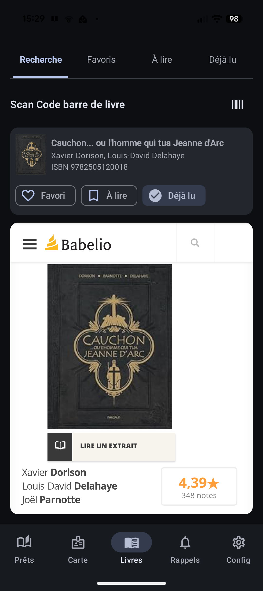
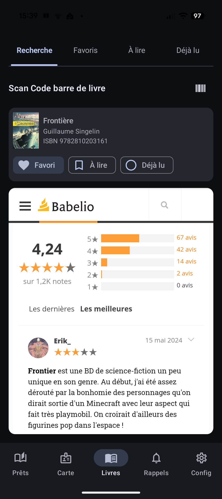

Découvrir un livre avant de le choisir
Devant un rayon bien rempli, il est parfois difficile de choisir. Biblio Cuers vous donne les clés d'un choix éclairé.
En pratique
- Devant un livre en rayon, scannez son code-barres (un ISBN) : la fiche du livre s'affiche aussitôt.
- Vous y trouvez la couverture, le titre, l'auteur, ainsi que la note et le résumé du livre.
- Un lien permet d'ouvrir la page du livre sur Google Books pour en savoir plus.
- Résumés, avis et critiques de lecteurs sont consultables directement dans la page, sans quitter l'application.
- Vous aimez le livre ? Enregistrez-le en un geste dans vos Favoris ou votre liste « À lire ».
Les points forts
- Un scan suffit : aucune saisie de titre à la main, pas de recherche interminable.
- Couverture, note et résumé réunis sur un seul écran, sans savoir-faire particulier.
- La fiche sert aussi de passerelle vers vos listes personnelles.

